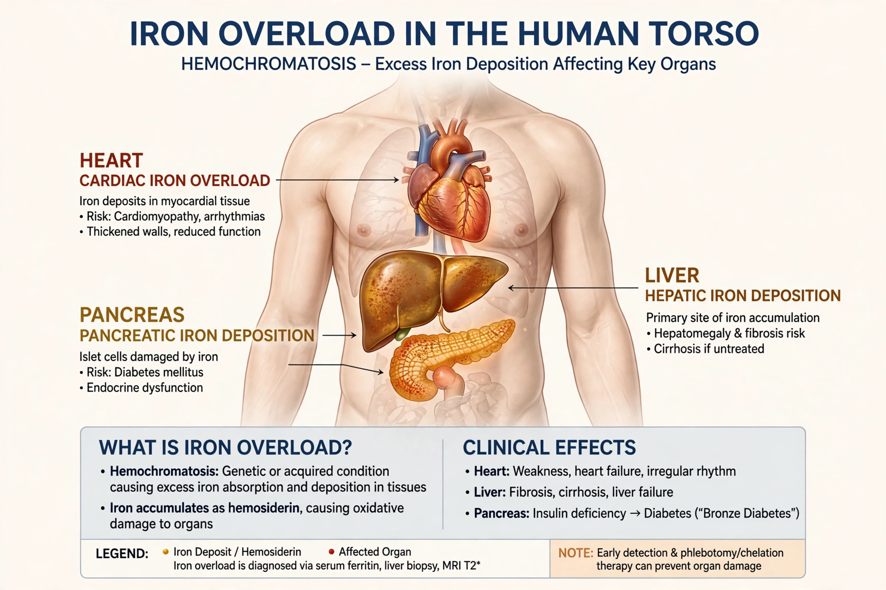

| Haemochromatosis | |
|---|---|
 | |
| Specialty | Haematology, hepatology |
| Cause | Usually HFE gene mutations (C282Y) causing excess iron absorption |
| Symptoms | Often none early; fatigue, joint pain, bronzed skin, diabetes, cirrhosis |
| Treatment | Venesection (phlebotomy); iron chelation |
Haemochromatosis (also spelled hemochromatosis) is a disorder of iron metabolism in which the body absorbs too much iron from food, causing it to accumulate in tissues and organs. Hereditary haemochromatosis is one of the most common genetic disorders in people of Northern European ancestry. Over decades the excess iron damages the liver, pancreas, heart, joints and skin, producing the classic (but late) combination of cirrhosis, diabetes and bronze skin pigmentation — once called "bronze diabetes".
The commonest form is caused by mutations in the HFE gene on chromosome 6. The C282Y mutation, carried by roughly 1 in 10 people of Northern European descent and homozygous in about 1 in 200–300, reduces production of the hormone hepcidin, which normally limits intestinal iron absorption via the iron exporter ferroportin. Without that brake, iron accumulates at perhaps 0.5–1 g per year. Rarer forms involve genes for hemojuvelin, hepcidin itself, transferrin receptor 2 or ferroportin; juvenile haemochromatosis presents earlier and more severely. Secondary iron overload can follow repeated blood transfusions or chronic liver disease.
Early symptoms are non-specific: fatigue, arthralgia (especially of the knuckle joints), loss of libido and abdominal pain. Advanced disease causes cirrhosis and increases the risk of hepatocellular carcinoma; diabetes from pancreatic iron; cardiomyopathy and arrhythmias; and slate-grey or bronze skin. Men usually present earlier than women, whose iron losses through menstruation and pregnancy are protective.
Diagnosis rests on iron studies in a blood test: raised transferrin saturation (typically >45%) and raised serum ferritin suggest overload, confirmed by HFE genetic testing (a medical test) and, where needed, MRI measurement of liver iron or liver biopsy.
Treatment is simple and effective if begun before organ damage: regular venesection (removal of ~500 ml of blood, each removing ~250 mg of iron) until ferritin falls to target, then maintenance phlebotomy for life. Patients ineligible for venesection may receive iron-chelating drugs. Treated patients diagnosed before cirrhosis and diabetes develop have a normal life expectancy; blood removed can often be donated.
See also: Transferrin · Blood test · Medical test